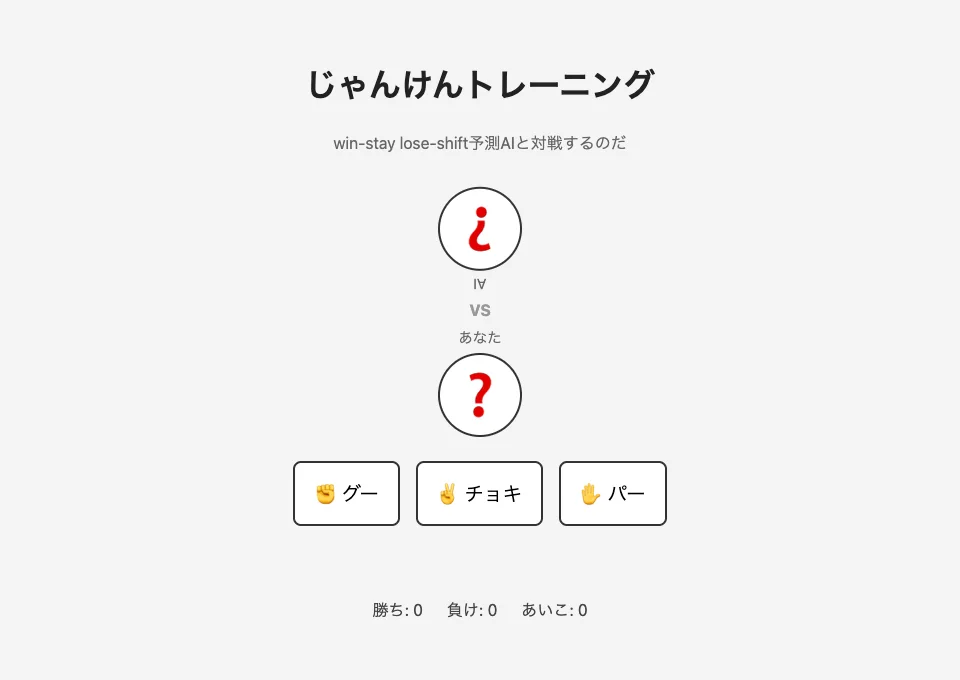

体験
プレイヤーに見えるのはAIが出した手だけだが、その裏でJevが選んでいるのは「相手の次の手」である。判断の対象と、画面に出る結果が一段ずれている。
- APIキーが未設定のときや通信に失敗したときは、直前の手と勝敗だけを見るルールベースの予測へ自動で戻る。作者は、そのとき画面に「ルールベース予測」と出るので、AIが効いているかが一目で分かると書いている。公開スクリプトにも、2種類の表示文言と、失敗時に切り替える処理がある。
- 失敗を隠して同じ見た目で動かし続けるのではなく、どちらの仕組みが手を決めたかをプレイヤーに知らせている。遊びの場面だが、縮退運転を明示する設計の小さな例になっている。
- 作者は先にルールベース版を身内に試してもらい、18戦で人間10勝・AI4勝・あいこ4回だったと書いている。決定論的な実装は3回ほどで読まれた、というのがJevへ切り替えた動機である。Jev版で勝率が上がったかどうかは記事に示されていない。
- AIの手を180度回転させて上に置く配置は、作者によれば思いつきだが、対面で向き合う感じを出している。
- 公開スクリプトには予測の理由を出す欄もあるが、何が表示されるかは確かめていない。
キャプチャ
{kind=link}

（原寸の画像を開く）見る箇所上のAIの手が「AI」の文字ごと180度回転して、下の「あなた」と向き合う配置。グー・チョキ・パーの3つのボタン、下端の勝ち・負け・あいこの数
入力から画面の変化まで
-
判断への入力
これまでの対戦履歴を文章にしたもの（記事のコードでは「1回目: 人間はグーを出して勝った」の形）。プレイヤーが手を選ぶたびに履歴が伸びる。
-
Jevの判断
「次に人間がどの手を出すか」を、グー・チョキ・パーの3択から選ぶ。記事のコードは質問の型を
choiceと明記している。アプリは予測した手に勝つ手を出す。 -
結果がUIをどう変えるか
AIの手と自分の手が向き合って出て、勝敗の数が更新される。記事とスクリプトによれば、予測の出どころが「AI予測」か「ルールベース予測」かの表示として添えられる。
- 判断型の見立て
- Choice出典に明記
- 記事のコードが、質問の型をchoice、候補をrock・scissors・paperと明記している。
Jevとの適合
3択から確率付きで1つを選ぶ問いは、Choiceにそのまま当てはまる。作者は、JSONで返すよう念押しする必要がなく、選択式の答えがそのまま使えた点を挙げている。ただし、じゃんけんの手を履歴から当てられるかは別の問題で、予測の当たり具合はこの事例からは分からない。
確認範囲と未確認事項
日本語の作者によるnote記事と、公開サイトの初期画面、公開されているクライアント側のスクリプトを確認。掲載した画面は手を出す前の初期状態で、この作業では対戦していない。予測の出どころを示す表示は、記事の説明とスクリプトの文言から確かめたもので、画面としては確認していない。記事中の対戦成績は、Jevを入れる前のルールベース版についての作者の申告である。
- 確認済み記事本文と記事内のコード、2026-09-21に取得した公開サイトの初期画面（手の配置、3つのボタン、勝敗の数）、公開されているクライアント側スクリプトにある「AI予測」「ルールベース予測」の表示文言と失敗時の切り替え処理
- 未検証対戦中の画面、予測の出どころの表示が実際に出る様子、公開サイトで現在Jevが動いているか、予測の当たり具合、サーバー側のコード
- 推定扱いなし（質問型は記事のコードに明記）。予測の理由の欄に出る内容は不明
- 引用公開サイトの初期画面を2026-09-21に取得。入力や対戦は行っていない。権利は作者に帰属する